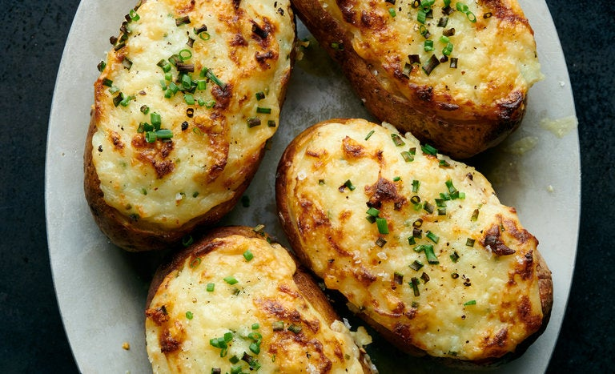

Twice-baked Potato

Description
At its simplest, a twice-baked potato is creamy, cheesy mashed potatoes cradled in crisp, salty skin.
That's the recipe you see here: comforting, satisfying and pretty much ideal.
Ingredients
- 4 tablespoons unsalted butter, cubed and softened
- 4 large russet potatoes
- 2 tablespoons canola or other neutral oil
- Kosher salt
- 1/2 cup whole milk
- 1/2 cup sour cream
- 1/2 cup grated cheddar cheese
Steps
- Preheat over to 400 degrees
- Soften butter from fridge
- Clean potatoes, poke holes on them with a fork
- Toss potatoes in a bowel with oil and 1/2 teaspoon of salt
- Place potatoes in the over under a baking sheet for 1 hour
- Remove from the oven and let it sit until cool
- Slice the top third lengthwise off the potatoes
- Use a spoon to scoop out the flesh
- Add flesh to a bowl, mash the potato flesh with a fork or potato masher
- Add butter, milk, sour cream, cheese and sit to combine
- Season generously with salt and pepper
- Stir in the chives
- Add filling to potato skin
- Bake the potatoes for 10 mins until warmed